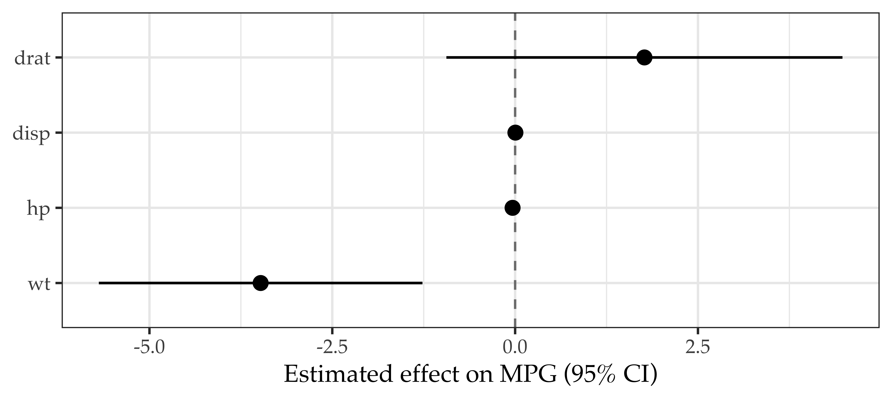
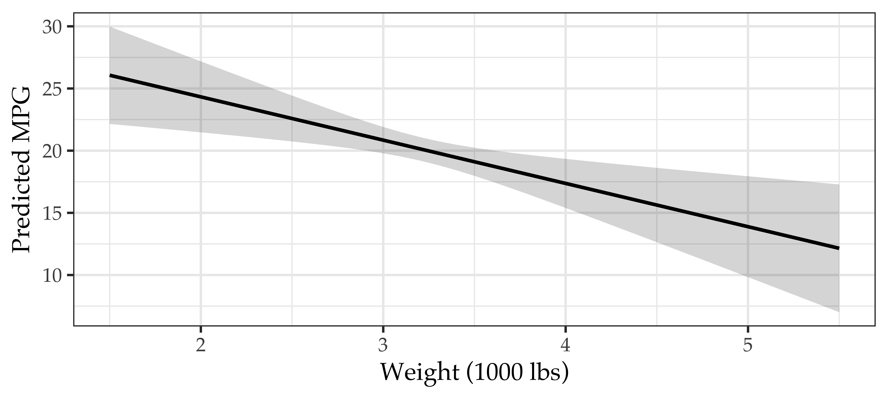
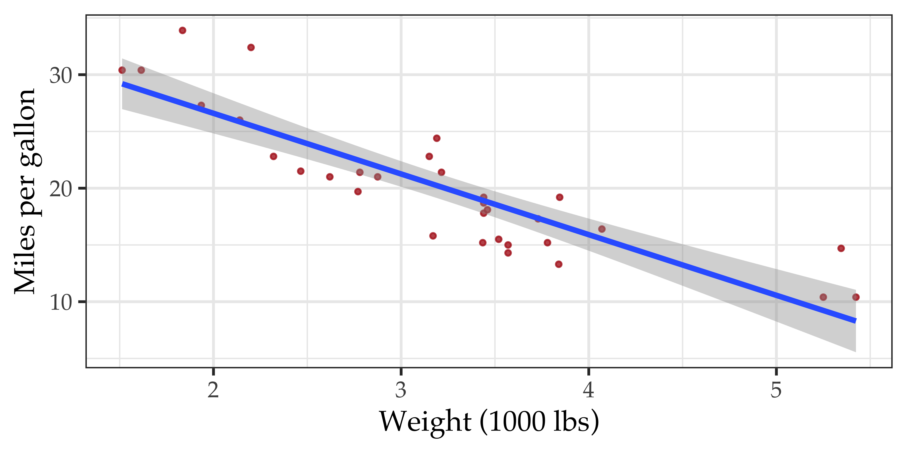

library(ggplot2); library(broom); library(dplyr); library(ragg); library(systemfonts)
m <- lm(mpg ~ wt + hp + disp + drat, data = mtcars)
tidy(m, conf.int = TRUE) |>
filter(term != "(Intercept)") |>
ggplot(aes(x = estimate, y = reorder(term, estimate))) +
geom_vline(xintercept = 0, linetype = "dashed", colour = "grey50") +
geom_pointrange(aes(xmin = conf.low, xmax = conf.high), linewidth = 0.8) +
labs(x = "Estimated effect on MPG (95% CI)", y = NULL) +
theme_bw(base_size = 16) + theme(text = element_text(family = "Palatino"))How to give a killer presentation?
Karl Ho
School of Economic, Political and Policy Sciences
University of Texas at Dallas
August 19, 2026
Killer presentation
#1 Skill Irreplaceable in the Data Science Revolution Age
This is the one tool we have to outsmart smart machines.
Prepare yourself
Prepare yourself
- Watch Great Persuaders
- See Yourself as a Chief Storytelling Officer
- Reframe and Rehearse
Prepare yourself: Tools
Prepare yourself: Tools
- Online Slides
- Quarto Presentation (reveal.js)
- Keynote vs. Powerpoint
- LaTeX Beamer
Prepare yourself: How to make great (not good) slides
- Know your tool
- Legible fonts (never use default)
- Figures > Tables > Text
- Cognitive Science
- Fancy elements (e.g. interactive, reactive)
Consider adopting novel design solutions only when the estimated payoff is substantially greater than the cost of learning to use them.
Prepare yourself: On stage
Prepare yourself: On stage
- Always look at the audience
- Tell us your research question at the beginning of your talk.
- Spend a minute or two explaining why this question is important and original. You are charged with responsibility that you are not copying other people’s papers.
- Again, make sure you look at the audience (you see me, I see you!)
Prepare yourself: On stage (cont’d)
- Spend as little time as possible summarizing the literature. But this is staple too. Focus on your argument.
- Presenting a table with quantitative results is fine, but a figure illustrating your findings is better.
- When presenting quantitative evidence, focus on the hypothesis you are testing.
- Repeat the big take-away points from your paper at the end.
Prepare yourself: On stage (cont’d)
- Reserve one minute for Q&A
- DON’T EXCEED YOUR TIME LIMIT!
Powerful slides for data and social scientists
Your problem is not a shortage of evidence
It is that evidence is not an argument.
- You spent six weeks on the model. The audience gets six minutes.
- They cannot re-derive your reasoning in real time — they can only follow it.
- So every slide has one job: advance one claim, and show the evidence for it.
If the audience has to ask “what am I looking at?”, you have already spent the slide.
Assertion–Evidence: the single highest-return change
Michael Alley’s structure for technical talks — replace the topic-phrase title with a full-sentence assertion, and fill the body with visual evidence, not bullets.
Topic-phrase slide (weak)
Regression Results
Model 1 · Model 2 · Model 3
Controls included
\(R^2 = 0.41\)
Assertion–evidence slide (strong)
Turnout rises with education — but only above median income
(one figure, direct-labeled, nothing else)
The evidence ladder
Climb it. Most social science talks stop one or two rungs too low.
| Rung | What you show | What the audience gets |
|---|---|---|
| 1 | Raw regression table | Nothing, in 20 seconds |
| 2 | Coefficient plot with CIs | Sign, magnitude, precision at a glance |
| 3 | Predicted values / marginal effects | The quantity you actually theorized |
| 4 | Simulated scenario, in substantive units | “A 1-SD rise in X moves turnout 4.2 points” |
Rung 2: kill the table, plot the coefficients

Rung 3: show the quantity you theorized
nd <- data.frame(wt = seq(1.5, 5.5, 0.1),
hp = mean(mtcars$hp), disp = mean(mtcars$disp),
drat = mean(mtcars$drat))
p <- predict(m, newdata = nd, interval = "confidence") |> as.data.frame()
ggplot(cbind(nd, p), aes(wt, fit)) +
geom_ribbon(aes(ymin = lwr, ymax = upr), alpha = 0.2) +
geom_line(linewidth = 1.1) +
labs(x = "Weight (1000 lbs)", y = "Predicted MPG") +
theme_bw(base_size = 16) + theme(text = element_text(family = "Palatino"))
Design rules with evidence behind them
Cleveland & McGill’s ranking of graphical perception — people decode position most accurately, area and color least:
- Position on a common scale → use it whenever you can
- Length → bars, but always from zero
- Angle / slope → slopegraphs, acceptable
- Area, volume, color saturation → last resort
Therefore: no pie charts for comparison, no 3-D anything, no dual axes, no rainbow scales for ordered data. Sort bars by value, not alphabetically.
Three habits that separate good from great
- Direct-label instead of legend. Every legend forces a saccade and a memory lookup. Put the series name at the end of the line.
- Annotate the one point you are arguing. If the slide exists to show that 2016 broke the trend, put an arrow and the words “2016 breaks the trend” on the plot.
- Show uncertainty, always. A point estimate with no interval is a claim you did not make. Ribbons, intervals, or a distribution — but never a bare point.
And: never read your slides aloud. Identical spoken and written text competes for the same channel and measurably reduces retention.
Your deck is your analysis
Quarto’s real advantage over Keynote is not the theme — it is that the figure on the slide is the figure from the model.
freeze: auto— cache results so a typo fix doesn’t re-run the MCMCecho: falsefor the talk,echo: truefor the workshop — one line changedoutput-location: fragment— code first, result on click, ideal for teaching- Appendix chunks stay in the same file as the talk, so Q&A is one keypress away
- Re-render the night before with new data and every number updates itself
No screenshot of a plot has ever survived a referee asking “what if you drop 2020?”
For Math and Coding Campers
For Math and Coding Campers
- Showcase math and coding skills
- Team work
- Presentation proportional to:
- \(\text{Effect} = f(\textit{Main takeaway},\ \textit{time},\ \textit{skills},\ \textit{audience})\)
- Technical detail
- Leave appendix after end of presentation for Q&A
- e.g. Codes, additional charts, screenshots or video or running process
The six-minute talk
Short is harder — and that is the point
Constrained formats exist because unconstrained talks drift.
| Format | Slides | Per slide | Total | Advance |
|---|---|---|---|---|
| PechaKucha 20×20 | 20 | 20 s | 6 min 40 s | automatic |
| Ignite | 20 | 15 s | 5 min | automatic |
| Lightning talk | free | free | ~5 min | manual |
| Camp presentation | free | free | ~6 min | your call |
Borrow the discipline, skip the stopwatch
For camp you advance your own slides — so take the two constraints that actually do the work and leave the automation optional:
- One idea per slide, and a slide roughly every 20–30 seconds. A slide you stand on for 90 seconds is three slides wearing a trench coat.
- Images and figures over text. With 20 seconds of attention per slide, a paragraph will not be read — it will be ignored while you talk over it.
The auto-advance clock is a rehearsal tool. Practice under it; present without it.
Do the arithmetic before you write a slide
At a normal presenting pace of 130–150 words per minute:
| Talk length | Words you can say | Slides at ~20 s |
|---|---|---|
| 5 min | ~650–750 | 15 |
| 6 min | ~800–900 | 18 |
| 6 min 40 s (PechaKucha) | ~870–1000 | 20 |
| 15 min (conference) | ~2000–2200 | 30–45 |
900 words is roughly three double-spaced pages. That is your entire talk. Write it out once, count it, then cut 15% — you always speak slower on stage than at your desk.
A 20-slide storyboard that works
| Slides | Beat | Job |
|---|---|---|
| 1–2 | Hook | A puzzle, a number, or an image. No outline slide. |
| 3–4 | Question | State it as a question, out loud, verbatim |
| 5–6 | Stakes | Who is wrong if you are right? |
| 7–9 | Data & design | Where it came from, why it can answer the question |
| 10–15 | Findings | One claim per slide, one figure per claim |
| 16 | Limits | One honest sentence buys enormous credibility |
| 17–19 | Takeaway | Repeat the main finding in plain language |
| 20 | Close | Your name, the repo, the QR code |
Notice what is missing: a literature review, a methods derivation, and an agenda slide. They go in the appendix.
Mechanics in Quarto
For rehearsal, or for a true PechaKucha, put the clock in the YAML:
- Press S for speaker view: next slide, notes, and an elapsed timer
- Press O for overview — spot your text-heavy slides instantly
- Add
::: {.notes}blocks for the sentence you keep forgetting - Mark appendix slides
{visibility="uncounted"}so the slide counter still reads “14 / 20”
Rehearse like it is an experiment
- Run 1 — untimed, out loud, standing. Alone. You are finding the sentences, not polishing them.
- Run 2 — timed. Note where you overran. Cut slides, not words; trimming words makes you talk faster, which is the opposite of the goal.
- Run 3 — recorded. Watch it once at 1.5×. Filler words and the sixty-second slide are both unmissable at that speed.
Script exactly two sentences: the first and the last. The first because nerves peak at second zero; the last because that is what the audience carries out of the room.
Five ways a six-minute talk dies
- The agenda slide. Twenty seconds — 5% of your talk — spent telling people what you are about to tell them.
- Reading the regression table. See the evidence ladder.
- “I know this is small at the back.” Then it should not be on the slide.
- Saving the finding for slide 19. Front-load it. If the fire alarm goes off at minute three, what must they already know?
- Running over. In a six-minute format, thirty seconds over is 8% of somebody else’s talk.
Wrap up
What to remember
- Headlines are claims, not topics
- Figures over tables, effects over coefficients, always with uncertainty
- One idea per slide, roughly one slide per 20–30 seconds
- Rehearse timed and recorded — three runs, minimum
- Don’t exceed your time limit
Resources
Slide design
- Michael Alley, Assertion–Evidence — the structure, with before/after examples
- Jean-luc Doumont, Trees, Maps, and Theorems — principiae.be
Showing quantitative results
- Kastellec & Leoni (2007), “Using Graphs Instead of Tables in Political Science”, Perspectives on Politics
- King, Tomz & Wittenberg (2000), “Making the Most of Statistical Analyses,” AJPS
- Kieran Healy, Data Visualization: A Practical Introduction — free online
- Claus Wilke, Fundamentals of Data Visualization — free online
Format
Appendix: reproducible example

Figure 3: Keep the figure on the slide, park the code in the appendix.
Thank you
Karl Ho
School of Economic, Political and Policy Sciences
University of Texas at Dallas

EPPS Math and Coding Camp